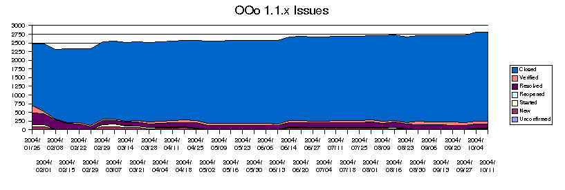

SRX645
SRX644/45 is the codeline for OpenOffice.org 1.1/StarOffice 7. There
is no separate branch for releasing an OpenOffice.org version. This
codeline is "feature complete" since 09/2002. The HEAD of this codeline
can be checkout by mws_srx645 tag.
-
Bugfixes for OOo 1.1.x
-
Bugfixes for StarOffice 7 codeline (SRX644/45)
-
no more development of features on this branch
Work for ports (e.g. MacOSX, Irix, etc.. ) and localizations are still possible.
If you are unsure if it is appropriate to set target milestone to
1.1.1 or 1.1.2 please ask on releases@openoffice.org for confirmation.
Only issues which are either regressions or with assigned resources for
fixing are allowed to set on this codeline. Exceptions have to be
requested on releases@openoffice.org.
Nominations for OOo 1.1.1 : severe issues P1+P2 plus some
selected P3.
Nominations for OOo 1.1.2 : bugfixes which can be done without
risk.
Status:
Stable.
IssueZilla Bug handling:
Issues for OpenOffice.org 1.1 are marked with a target milestone value for one of the OOo 1.1 targets.
Query
for open OOo 1.1.x issues.

Plan (pdf):
February/March 2005: OpenOffice.org 1.1.5 bugfix release ?- close of tree : 2005/06/17 (delayed )
- release build: Mid June (delayed, SRX645_m57)
- release of 1.1.5: end of June 2005
ATTN: these dates may change !.
History:
11/2002: release OpenOffice643 (OO643C) (November 22)
12/2002: start community branch cws_srx644_ooo_2003_01_12.
01/2003: start community branch cws_srx644_ooo_20030223
02/2003: start community branch cws_srx644_ooo_20030309
03/2003: release SRX644 as OOo 1.1 Beta.
03/2003: start community branch cws_srx644_ooo_20030412
05/2003 : release OpenOffice.org 1.1 Beta2
07/2003 (14th) : release OpenOffice.org RC (Release Candidate)
07/2003 (24th) : release OpenOffice.org RC2 (Release Candidate2)
08/2003 (13th) : release OpenOffice.org RC3 (Release Candidate3)
09/2003 (4th) : release OpenOffice.org RC4 (Release Candidate4)
09/2003 (19th) : release OpenOffice.org RC5 (Release Candidate5)
10/2003 (1st): release OpenOffice.org 1.1.0
12/2003 (18th): release OpenOffice.org 1.1.1a (early feedback
version)
02/2004 (8th): release OpenOffice.org 1.1.1b (early feedback version)
03/2004 (30th): release OpenOffice.org 1.1.1
06/2004 (22nd): release OpenOffice.org 1.1.2
09/2004 (27th): release OpenOffice.org 1.1.3
12/2004 (22nd): release OpenOffice.org 1.1.4
Feedback or questions: mh@openoffice.org
Last change: $Date: 2005/08/08 06:49:57 $
$Revision: 1.20 $